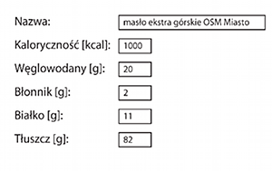
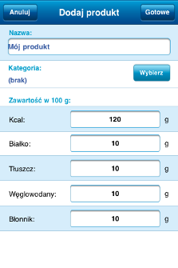
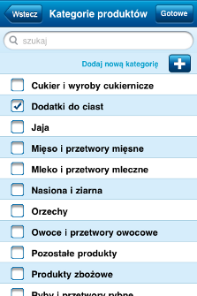
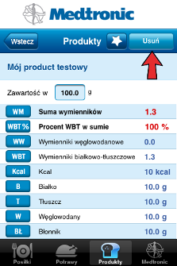

Aplikacja umożliwia dodawanie własnych produktów, potraw oraz posiłków.
Aby dodać produkt należy skompletować następujące dane i wprowadzić je do aplikacji:

Aby dodać produkt do listy, należy wejść w zakładkę Produkty i dotknąć przycisk Dodaj.
W formularzu należy wpisać nazwę produktu oraz uzupełnić wartości odżywcze produktu na 100g.

Należy także wybrać jedną z kategorii produktu poprzez kliknięcie na przycisk Wybierz, a następnie zaznaczenie odpowiedniej kategorii na wyświetlonej liście (zobrazowane poniżej).

Dodany produkt może zostać usunięty z aplikacji. Należy w tym celu wejść na listę produktów, wybrać dany produkt i w szczegółach produktu kliknąć na przycisk Usuń.
